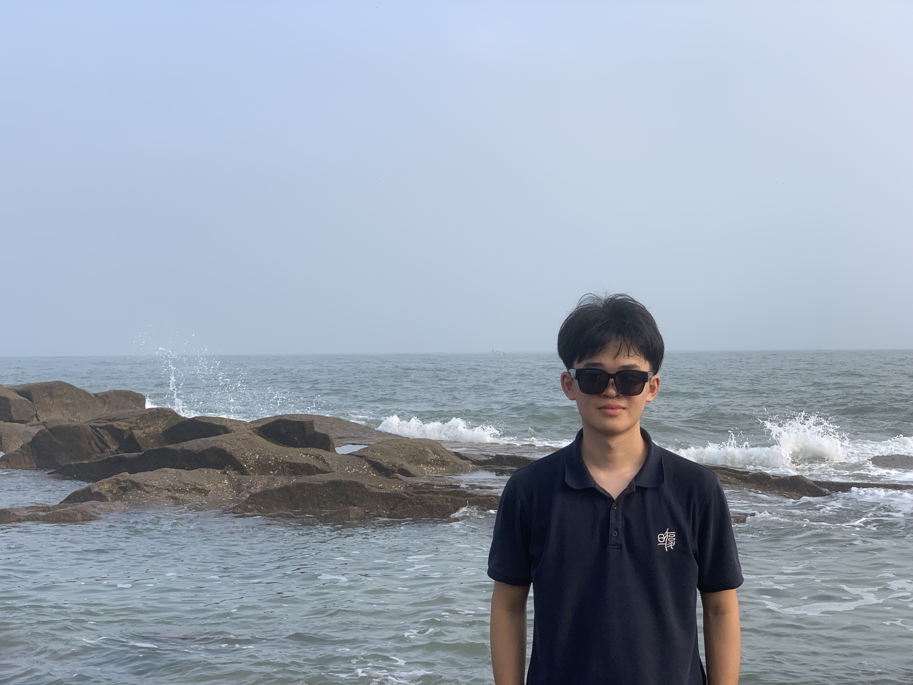

Yikai Tang
MS in Robotics (MSR) student at Carnegie Mellon University · B.E. from Shanghai Jiao Tong University · previously Visiting Researcher at UC Berkeley
About
Hi there! 👋 I am Yikai Tang, a Master of Science in Robotics (MSR) student at Carnegie Mellon University. Before that, I received my B.E. in Computer Science from Shanghai Jiao Tong University and was a visiting researcher at UC Berkeley (BAIR). During my undergrad years, I'm fortunate to be advised by Prof. Jitendra Malik and Prof. Yunbo Wang. My research interests mainly lie in Robot Learning, where I focus on building reliable, generalizable and modality-rich robot policies that can be applied to real-world scenarios.
Publications
ISF-VLA: An Implicit 3D Vision-Language-Action Model Capitalizing on 3D-Aware Vision Foundation Models through Implicit Spatial Fusion
IEEE/RSJ International Conference on Intelligent Robots and Systems (IROS) 2026